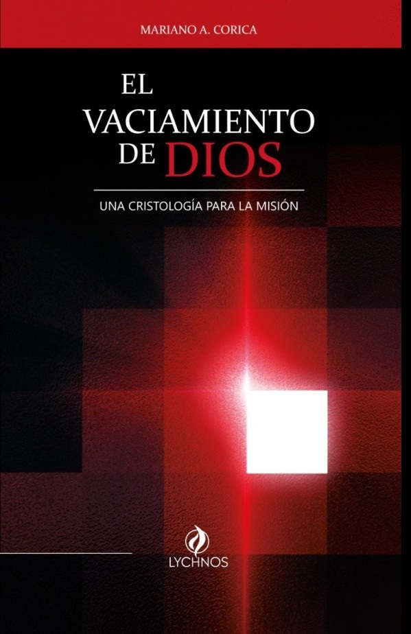
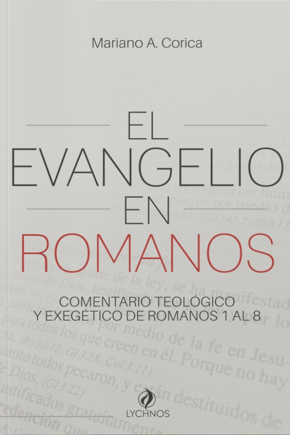
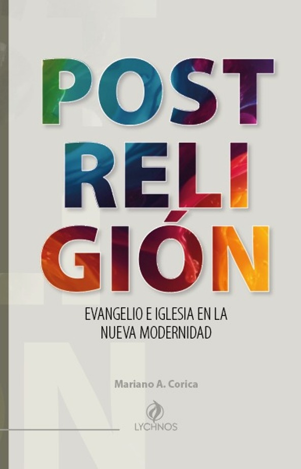
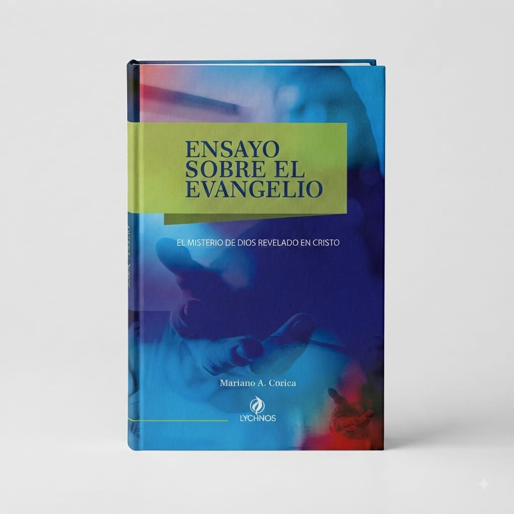

2026
Vivir la fe
desde el Evangelio.
Una obra teológica dedicada a pensar el Evangelio y la Iglesia en la cultura y la experiencia del mundo contemporáneo.
Libro más reciente

2026
EL VACIAMIENTO DE DIOS
El vaciamiento de Dios explora el sentido teológico y misional de la kenosis de Dios en Cristo. A partir de Filipenses 2:5–8, el libro examina el modo en que Dios cumple su misión revelándose plenamente al mundo, asumiendo la vulnerabilidad, el sufrimiento y el rechazo.
Conocer el libro →Obra publicada
Libros

2024
EL EVANGELIO EN ROMANOS
Ver libro →
2023
POSTRELIGIÓN
Ver libro →
2022
ENSAYO SOBRE EL EVANGELIO
Ver libro →YouTube
Mensajes
Mensajes y reflexiones bíblicas disponibles en YouTube.
Ver mensajes →Conversaciones
Entrevistas
Conversaciones y entrevistas sobre teología, fe, cultura y pensamiento.
Ver entrevistas →Sobre mí

Mariano
A. Corica
Teólogo y escritor. Su trabajo se desarrolla en torno a la teología, el Evangelio, la Iglesia y las transformaciones culturales del mundo contemporáneo.